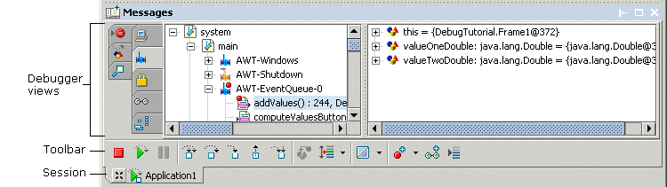

Debugging features vary by JBuilder edition
You can debug both local and distributed applications, including servlets, JSPs, applets, EJBs, and unit tests. To debug files in your project, choose Run|Debug Project. Your program may be compiled. You can set runtime configuration options for the debugger. When debugging, you can control your program's execution, examine data values and step through code. The debugger UI, consisting of the debugger views, the toolbar, the session tab and the status bar is displayed in the message pane.

For more information, see:
Building Applications with JBuilder: Debugging Java programs
Building Applications with JBuilder: Remote debugging